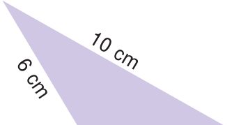

- 1.Draw a line segment \(AB = 7\) cm and mark a point P on it. Draw a line perpendicular to
the given line segment at P.
- 2.Draw a line segment \(LM = 6.5\) cm and take a point P not lying on it. Using a set square
construct a line perpendicular to LM through P.
- 3.Find the distance between the given lines using a set square at two different points on
each of the pairs of lines and check whether they are parallel.
- 4.Draw a line segment measuring 7.8 cm. Mark a point B above it at a distance of 5 cm.
Through B draw a line parallel to the given line segment.
- 5.Draw a line and mark a point R below it at a distance of 5.4 cm Through R draw a line
parallel to the given line.
Exercise 4.3
- 1.What are the angles of an isosceles right angled triangle?
- 2.Which of the following correctly describes the given triangle?
- (a)It is a right isosceles triangle.

- (b)It is an acute isosceles triangle.
- (c)It is an obtuse isosceles triangle.
- (d)It is an obtuse scalene triangle.
- 3.Which of the following is not possible? 6 cm
- (a)An obtuse isosceles triangle (b) An acute isosceles triangle
- (c)An obtuse equilateral triangle (d) An acute equilateral triangle
- 4.If one angle of an isosceles triangle is 124˚, then find the other angles.

- 5.The diagram shows a square ABCD. If the line segment joins A and C, then
mention the type of triangles so formed.
- 6.Draw a line segment AB of length 6 cm. At each end of this line segment
AB, draw a line perpendicular to the line AB. Are these lines parallel?
- 7.Is a triangle possible with the angles \(90 ^{\circ}\) , \(90 ^{\circ}\) and \(0 ^{\circ}\) ? Why?
- 8.Which of the following statements is true? Why?
- (a)Every equilateral triangle is an isosceles triangle.
- (b)Every isosceles triangle is an equilateral triangle.